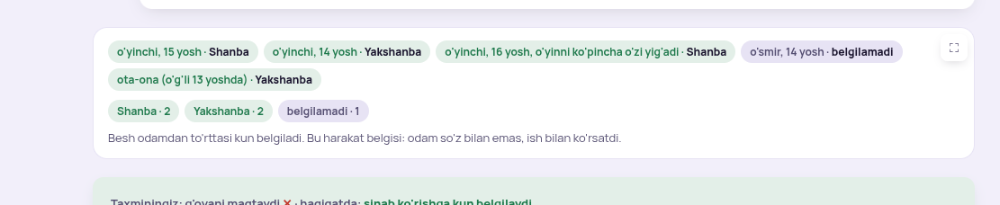
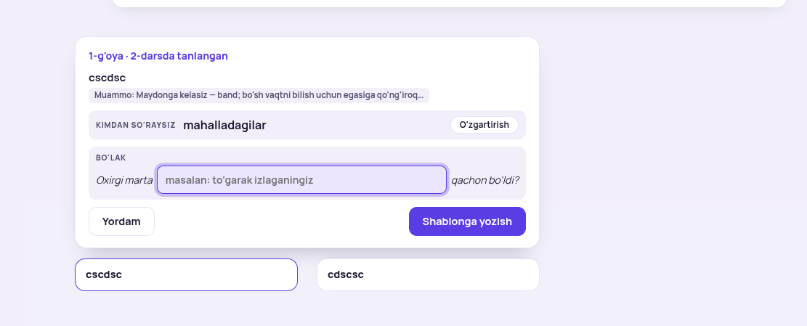
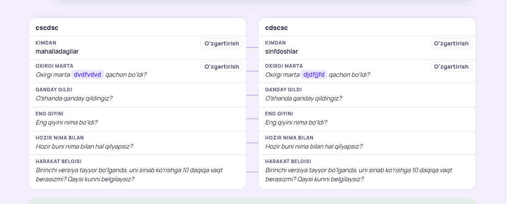
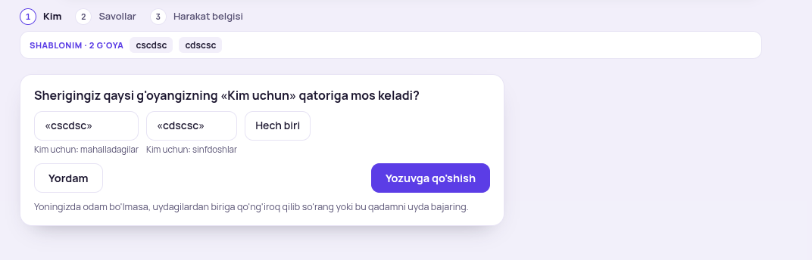

Har bandda sizning surat, tashxis, taklif-namuna. «Hammasi A» yoki raqam bilan.
«TUSHUNARSIZ»

Tashxis. Natija uch xil chipga sochilgan: odamlar, kunlar sanog'i, gap. Nima «so'z», nima «ish» ekani ko'rinmaydi. Har odam bitta qator bo'lishi kerak: kim, nima dedi, belgi.
«tushunarsiz»

Tashxis. «Bo'lak» ichki so'z, o'quvchi nima yozishini bilmaydi. Karta sarlavhasi va g'oya nomi ikki qator bo'lib ketgan. Pastdagi ikki bo'sh sarlavha shablonning qoldig'i.
Kimdan so'raysiz: sinfdoshlar O'zgartirish
«juda ko'pligimi, tushunarsiz»

Tashxis. Darsning fikri «savollar bir xil, faqat 1-savolda bo'lak boshqa». Ikki ustun esa teskarisini ko'rsatadi: 12 ta alohida katak. Faqat farq qiladigan joy ikki ustunda bo'lishi kerak, bir xil joy bir marta.
«manashuni bitta kartaga olsakchi, elementchalar sochilib turmasin»

Tashxis. Uchta element bitta ishni aytadi. Tasma g'oyalarni takrorlaydi (ular tanlov tugmalarida bor). «Kim uchun» tugmadan ajralgan.